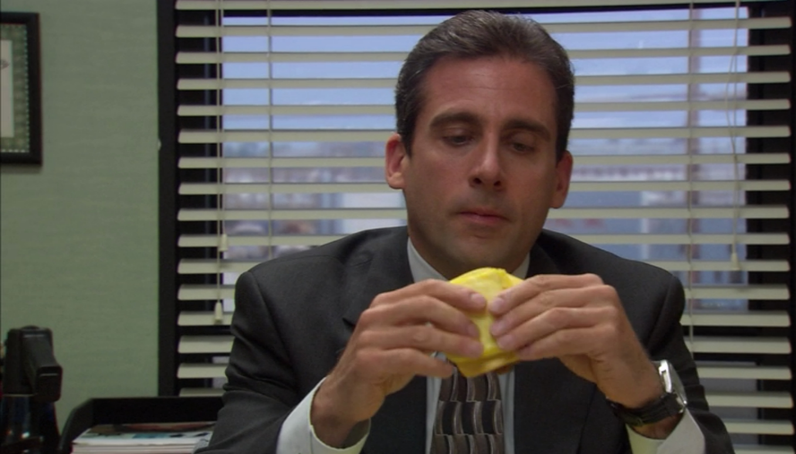

Sausage Egg & Cheese Biscuit

A great way to start your day if you're an early bird. You don't need to call your temp to get you
breakfast at 5 am anymore!
Ingredients
- Sausage
- Egg
- Cheese
- Biscuits
Steps
- Grill the sausage. Be careful not to burn your foot on the grill!
- In a small bowl, beat the egg with a fork.
- Cook the egg until cooked. Top it with shredded cheese.
-
To serve, place the sausage and the egg on one of the biscuits and
cover with the other biscuit. Remove the biscuits before eating
though. It's healthier.